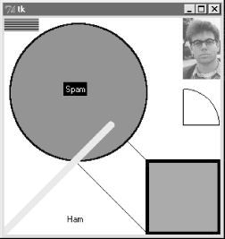
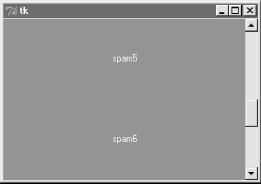
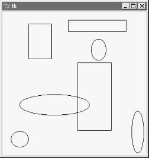
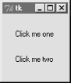

| I l@ve RuBoard |
|
8.5 CanvasWhen it comes to graphics, the Tkinter Canvas widget is the most free-form device in the library. It's a place to draw shapes, move objects dynamically, and place other kinds of widgets. The canvas is based on a structured graphic object model: everything drawn on a canvas can be processed as an object. You can get down to the pixel-by-pixel level in a canvas, but you can also deal in terms of larger objects like shapes, photos, and embedded widgets. 8.5.1 Basic Canvas OperationsCanvases are ubiquitous in much nontrivial GUI work, and we'll see larger canvas examples show up later in this book under the names PyDraw, PyView, PyClock, and PyTree. For now, let's jump right into an example that illustrates the basics. Example 8-13 runs most of the major canvas drawing methods. Example 8-13. PP2E\Gui\Tour\canvas1.py# demo all basic canvas interfaces
from Tkinter import *
canvas = Canvas(width=300, height=300, bg='white') # 0,0 is top left corner
canvas.pack(expand=YES, fill=BOTH) # increases down, right
canvas.create_line(100, 100, 200, 200) # fromX, fromY, toX, toY
canvas.create_line(100, 200, 200, 300) # draw shapes
for i in range(1, 20, 2):
canvas.create_line(0, i, 50, i)
canvas.create_oval(10, 10, 200, 200, width=2, fill='blue')
canvas.create_arc(200, 200, 300, 100)
canvas.create_rectangle(200, 200, 300, 300, width=5, fill='red')
canvas.create_line(0, 300, 150, 150, width=10, fill='green')
photo=PhotoImage(file='../gifs/guido.gif')
canvas.create_image(250, 0, image=photo, anchor=NW) # embed a photo
widget = Label(canvas, text='Spam', fg='white', bg='black')
widget.pack()
canvas.create_window(100, 100, window=widget) # embed a widget
canvas.create_text(100, 280, text='Ham') # draw some text
mainloop()
When run, this script draws the window captured in Figure 8-21. We saw how to place a photo on canvas and size a canvas for a photo earlier on this tour (see Section 7.9 near the end of Chapter 7). This script also draws shapes, text, and even an embedded Label widget. Its window gets by on looks alone; in a moment we'll learn how to add event callbacks that let users interact with drawn items. Figure 8-21. canvas1 hardcoded object sketches8.5.2 Programming the Canvas WidgetCanvases are easy to use, but rely on a coordinate system, define unique drawing methods, and name objects by identifier or tag. This section introduces these core canvas concepts. 8.5.2.1 CoordinatesAll items drawn on a canvas are distinct objects, but they are not really widgets. If you study the canvas1 script closely, you'll notice that canvases are created and packed (or gridded or placed) within their parent container just like any other widget in Tkinter. But the items drawn on a canvas are not -- shapes, images, and so on are positioned and moved on the canvas by coordinates, identifiers, and tags. Of these, coordinates are the most fundamental part of the canvas model. Canvases define an (X,Y) coordinate system for their drawing area; X means the horizontal scale, Y means vertical. By default, coordinates are measured in screen pixels (dots), the upper-left corner of the canvas has coordinates (0,0), and X and Y coordinates increase to the right and down, respectively. To draw and embed objects within a canvas, you supply one or more (X,Y) coordinate pairs to give absolute canvas locations. This is different than the constraints we've used to pack widgets thus far, but allows very fine-grained control over graphical layouts, and supports more freeform interface techniques such as animation.[2]
8.5.2.2 Object constructionThe canvas allows you to draw and display common shapes like lines, ovals, rectangles, arcs, and polygons. In addition, you can embed text, images, and other kinds of Tkinter widgets such as labels and buttons. The canvas1 script demonstrates all the basic graphic object constructor calls; to each, you pass one or more sets of (X,Y) coordinates to give the new object's location, start and end points, or diagonally opposite corners of a bounding box that encloses the shape: id = canvas.create_line(fromX, fromY, toX, toY) # line start, stop id = canvas.create_oval(fromX, fromY, toX, toY) # two opposite box corners id = canvas.create_arc( fromX, fromY, toX, toY) # two opposite oval corners id = canvas.create_rectangle(fromX, fromY, toX, toY) # two opposite corners Other drawing calls specify just one (X,Y) pair, to give the location of the object's upper-left corner: id = canvas.create_image(250, 0, image=photo, anchor=NW) # embed a photo id = canvas.create_window(100, 100, window=widget) # embed a widget id = canvas.create_text(100, 280, text='Ham') # draw some text The canvas also provides a create_polygon method that accepts an arbitrary set of coordinate arguments defining the end-points of connected lines; it's useful for drawing more arbitrary kinds of shapes composed of straight lines. In addition to coordinates, most of these drawing calls let you specify common configuration options, such as outline width, fill color, outline color, and so on. Individual object types have unique configuration options all their own too; for instance, lines may specify the shape of an optional arrow, and text, widgets, and images may all be anchored to a point of the compass (this looks like the packer's anchor, but really gives a point on the object that is positioned at the (X,Y) coordinates given in the create call; NW puts the upper-left corner at (X,Y)). Perhaps the most important thing to notice here, though, is that Tkinter does most of the "grunt" work for you -- when drawing graphics, you provide coordinates, and shapes are automatically plotted and rendered in the pixel world. If you've ever done any lower-level graphics work, you'll appreciate the difference. 8.5.2.3 Object identifiers and operationsAlthough not used by the canvas1 script, every object you put on a canvas has an identifier, returned by the create_ method that draws or embeds the object (what was coded as "id" in the last section's examples). This identifier can later be passed to other methods that move the object to new coordinates, set its configuration options, delete it from the canvas, raise or lower it among other overlapping objects, and so on. For instance, the canvas move method accepts both an object identifier and X and Y offsets (not coordinates), and moves the named object by the offsets given: canvas.move(objectIdOrTag, offsetX, offsetY) # move object(s) by offset If this happens to move the object offscreen, it is simply clipped (not shown). Other common canvas operations process objects too: canvas.delete(objectIdOrTag) # delete object(s) from canvas canvas.tkraise(objectIdOrTag) # raise object(s) to front canvas.lower(objectIdOrTag) # lower object(s) below others canvas.itemconfig(objectIdOrTag, fill='red') # fill object(s) with red color Notice the tkraise name -- raise by itself is a reserved word in Python. Also note that the itemconfig method is used to configure objects drawn on a canvas after they have been created; use config to set configuration options for the canvas itself. The best thing to notice here, though, is that because Tkinter is based on structured objects, you can process a graphic object all at once; there is no need to erase and redraw each pixel manually to implement a move or raise. 8.5.2.4 Canvas object tagsBut it gets even better: In addition to object identifiers, you can also perform canvas operations on entire sets of objects at once, by associating them all with a tag , a name that you make up and apply to objects on the display. Tagging objects in a Canvas is at least similar in spirit to tagging substrings in the Text widget we studied in the prior section. In general terms, canvas operation methods accept either a single object's identifier or a tag name. For example, you can move an entire set of drawn objects by associating all with the same tag, and passing the tag name to the canvas move method. In fact, this is why move takes offsets, not coordinates -- when given a tag, each object associated with the tag is moved by the same (X,Y) offsets; absolute coordinates would make all the tagged objects appear on top of each other instead. To associate an object with a tag, either specify the tag name in the object drawing call's tag option, or call the addtag_withtag(tag, objectIdOrTag) canvas method (or its relatives). For instance: canvas.create_oval(x1, y1, x2, y2, fill='red', tag='bubbles')
canvas.create_oval(x3, y3, x4, y4, fill='red', tag='bubbles')
objectId = canvas.create_oval(x5, y5, x6, y6, fill='red')
canvas.addtag_withtag('bubbles', objectId)
canvas.move('bubbles', diffx, diffy)
This makes three ovals and moves them at the same time by associating them all with the same tag name. Many objects can have the same tag, many tags can refer to the same object, and each tag can be individually configured and processed. As in Text, Canvas widgets have predefined tag names too: tag "all" refers to all objects on the canvas, and "current" refers to whatever object is under the mouse cursor. Besides asking for an object under the mouse, you can also search for objects with the find_ canvas methods: canvas.find_closest(X,Y), for instance, returns a tuple whose first item is the identifier of the closest object to the supplied coordinates -- handy after you've received coordinates in a general mouseclick event callback. We'll revisit the notion of canvas tags by example later in this chapter (see the animation scripts near the end if you can't wait). Canvases support additional operations and options that we don't have space to cover here (e.g., the canvas postscript method lets you save the canvas in a postscript file). See later examples in this book such as PyDraw for more details, and consult other Tk or Tkinter references for an exhaustive list of canvas object options. 8.5.3 Scrolling CanvasesAs demonstrated by Example 8-14, scrollbars can be cross-linked with a canvas using the same protocols we used to add them to listboxes and text earlier, but with a few unique requirements. Example 8-14. PP2E\Gui\Tour\scrolledcanvas.pyfrom Tkinter import *
class ScrolledCanvas(Frame):
def __init__(self, parent=None, color='brown'):
Frame.__init__(self, parent)
self.pack(expand=YES, fill=BOTH) # make me expandable
canv = Canvas(self, bg=color, relief=SUNKEN)
canv.config(width=300, height=200) # display area size
canv.config(scrollregion=(0,0,300, 1000)) # canvas size corners
canv.config(highlightthickness=0) # no pixels to border
sbar = Scrollbar(self)
sbar.config(command=canv.yview) # xlink sbar and canv
canv.config(yscrollcommand=sbar.set) # move one moves other
sbar.pack(side=RIGHT, fill=Y) # pack first=clip last
canv.pack(side=LEFT, expand=YES, fill=BOTH) # canv clipped first
for i in range(10):
canv.create_text(150, 50+(i*100), text='spam'+str(i), fill='beige')
canv.bind('<Double-1>', self.onDoubleClick) # set event handler
self.canvas = canv
def onDoubleClick(self, event):
print event.x, event.y
print self.canvas.canvasx(event.x), self.canvas.canvasy(event.y)
if __name__ == '__main__': ScrolledCanvas().mainloop()
This script makes the window in Figure 8-22. It is similar to prior scroll examples, but scrolled canvases introduce two kinks:
Figure 8-22. scrolledcanvas liveSizes are given as configuration options. To specify a view area size, use canvas width and height options. To specify an overall canvas size, give the (X,Y) coordinates of the upper-left and lower-right corners of the canvas in a four-item tuple passed to the scrollregion option. If no view area size is given, a default size is used. If no scrollregion is given, it defaults to the view area size; this makes the scrollbar useless, since the view is assumed to hold the entire canvas. Mapping coordinates is a bit more subtle. If the scrollable view area associated with a canvas is smaller than the canvas at large, then the (X,Y) coordinates returned in event objects are view area coordinates, not overall canvas coordinates. You'll generally want to scale the event coordinates to canvas coordinates, by passing them to the canvasx and canvasy canvas methods before using them to process objects. For example, if you run the scrolled canvas script and watch the messages printed on mouse double-clicks, you'll notice that the event coordinates are always relative to the displayed view window, not the overall canvas: C:\...\PP2E\Gui\Tour>python scrolledcanvas.py 2 0 event x,y when scrolled to top of canvas 2.0 0.0 canvas x,y -same, as long as no border pixels 150 106 150.0 106.0 299 197 299.0 197.0 3 2 event x,y when scrolled to bottom of canvas 3.0 802.0 canvas x,y -y differs radically 296 192 296.0 992.0 152 97 when scrolled to a mid point in the canvas 152.0 599.0 16 187 16.0 689.0 Here, the mapped canvas X is always the same as the canvas X because the display area and canvas are both set at 300 pixels wide (it would be off by two pixels due to automatic borders if not for the script's highlightthickness setting). But notice that the mapped Y is wildly different from the event Y if you click after a vertical scroll. Without scaling, the event's Y incorrectly points to a spot much higher in the canvas. Most of this book's canvas examples need no such scaling -- (0,0) always maps to the upper-left corner of the canvas display in which a mouseclick occurs -- but just because canvases are not scrolled. But see the PyTree program later in this book for an example of a canvas with both horizontal and vertical scrolls, and dynamically changed scroll region sizes. As a rule of thumb, if your canvases scroll, be sure to scale event coordinates to true canvas coordinates in callback handlers that care about positions. Some handlers might not care if events are bound to individual drawn objects instead of the canvas at large; but we need to talk more about events to see why. 8.5.4 Using Canvas EventsLike Text and Listbox, there is no notion of a single command callback for Canvas. Instead, canvas programs generally use other widgets, or the lower-level bind call to set up handlers for mouse-clicks, key-presses, and the like, as in Example 8-14. Example 8-15 shows how to bind events for the canvas itself, in order to implement a few of the more common canvas drawing operations. Example 8-15. PP2E\Gui\Tour\canvasDraw.py#################################################################
# draw elastic shapes on a canvas on drag, move on right click;
# see canvasDraw_tags*.py for extensions with tags and animation
#################################################################
from Tkinter import *
trace = 0
class CanvasEventsDemo:
def __init__(self, parent=None):
canvas = Canvas(width=300, height=300, bg='beige')
canvas.pack()
canvas.bind('<ButtonPress-1>', self.onStart) # click
canvas.bind('<B1-Motion>', self.onGrow) # and drag
canvas.bind('<Double-1>', self.onClear) # delete all
canvas.bind('<ButtonPress-3>', self.onMove) # move latest
self.canvas = canvas
self.drawn = None
self.kinds = [canvas.create_oval, canvas.create_rectangle]
def onStart(self, event):
self.shape = self.kinds[0]
self.kinds = self.kinds[1:] + self.kinds[:1] # start dragout
self.start = event
self.drawn = None
def onGrow(self, event): # delete and redraw
canvas = event.widget
if self.drawn: canvas.delete(self.drawn)
objectId = self.shape(self.start.x, self.start.y, event.x, event.y)
if trace: print objectId
self.drawn = objectId
def onClear(self, event):
event.widget.delete('all') # use tag all
def onMove(self, event):
if self.drawn: # move to click spot
if trace: print self.drawn
canvas = event.widget
diffX, diffY = (event.x - self.start.x), (event.y - self.start.y)
canvas.move(self.drawn, diffX, diffY)
self.start = event
if __name__ == '__main__':
CanvasEventsDemo()
mainloop()
This script intercepts and processes three mouse-controlled actions:
The net result creates a window like that shown in Figure 8-23 after user interaction. As you drag out objects, the script alternates between ovals and rectangles; set the script's trace global to watch object identifiers scroll on stdout as new objects are drawn during a drag. This screen shot was taken after a few object drag-outs and moves, but you'd never tell from looking at it; run this example on your own computer to get a better feel for the operations it supports. Figure 8-23. canvasDraw after a few drags and moves8.5.4.1 Binding events on specific itemsMuch like we did for the Text widget, it is also possible to bind events for one or more specific objects drawn on a Canvas with its tag_bind method. This call accepts either a tag name string or object ID in its first argument. For instance, you can register a different callback handler for mouseclicks on every drawn item, or on any in a group of drawn and tagged items, rather than for the entire canvas at large. Example 8-16 binds a double-click handler in both the canvas itself and on two specific text items within it, to illustrate the interfaces; it generates Figure 8-24 when run. Example 8-16. PP2E\Gui\Tour\canvas-bind.pyfrom Tkinter import *
def onCanvasClick(event):
print 'Got canvas click', event.x, event.y, event.widget
def onObjectClick(event):
print 'Got object click', event.x, event.y, event.widget,
print event.widget.find_closest(event.x, event.y) # find text object's id
root = Tk()
canv = Canvas(root, width=100, height=100)
obj1 = canv.create_text(50, 30, text='Click me one')
obj2 = canv.create_text(50, 70, text='Click me two')
canv.bind('<Double-1>', onCanvasClick) # bind to whole canvas
canv.tag_bind(obj1, '<Double-1>', onObjectClick) # bind to drawn item
canv.tag_bind(obj2, '<Double-1>', onObjectClick) # a tag works here too
canv.pack()
root.mainloop()
Figure 8-24. Canvas-bind windowObject IDs are passed to tag_bind here, but a tag name string would work too. When you click outside the text items in this script's window, the canvas event handler fires; when either text item is clicked, both the canvas and text object handlers fire. Here is the stdout result after clicking on the canvas twice and on each text item once; the script uses the canvas find_closest method to fetch the object ID of the particular text item clicked (the one closest to the click spot): C:\...\PP2E\Gui\Tour>python canvas-bind.py Got canvas click 3 6 .8217952 canvas clicks Got canvas click 46 52 .8217952 Got object click 51 33 .8217952 (1,) first text click Got canvas click 51 33 .8217952 Got object click 55 69 .8217952 (2,) second text click Got canvas click 55 69 .8217952 We'll revisit the notion of events bound to canvases in the PyDraw example in Chapter 9, where we'll use them to implement a feature-rich paint and motion program. We'll also return to the canvasDraw script later in this chapter, to add tag-based moves and simple animation with time-based tools, so keep this page bookmarked for reference. First, though, let's follow a promising side road to explore another way to lay out widgets within windows. |
| I l@ve RuBoard |
|